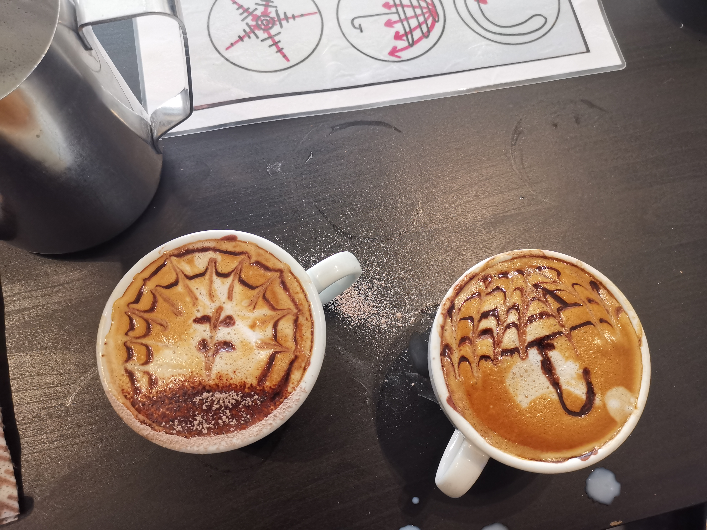
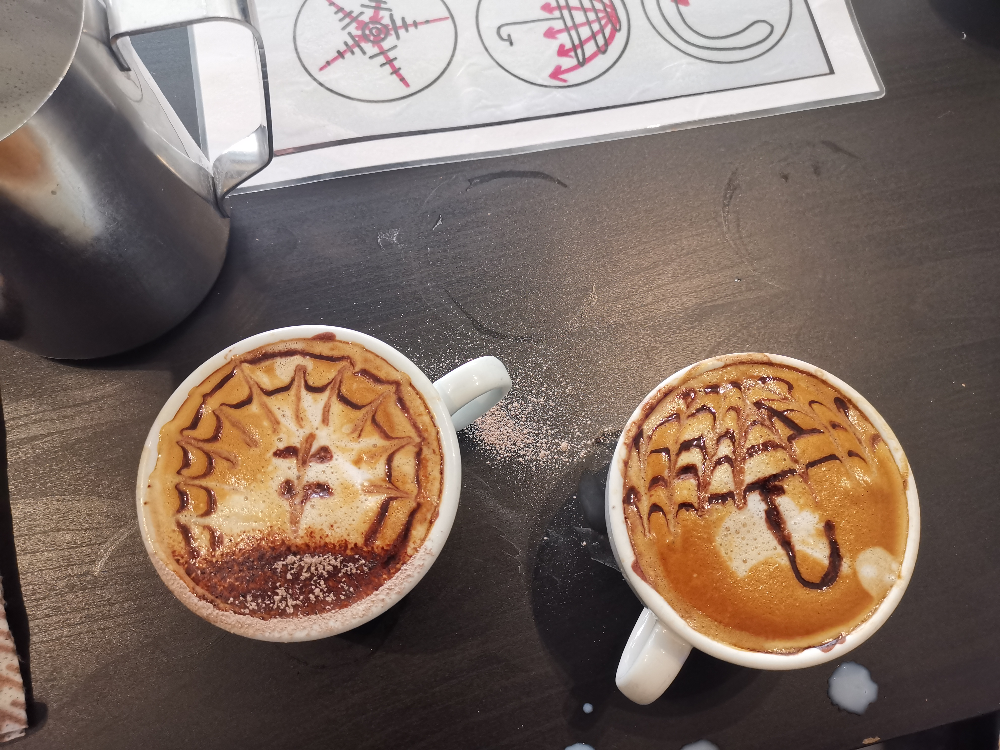
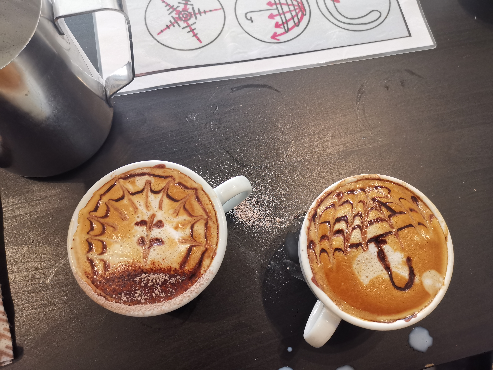
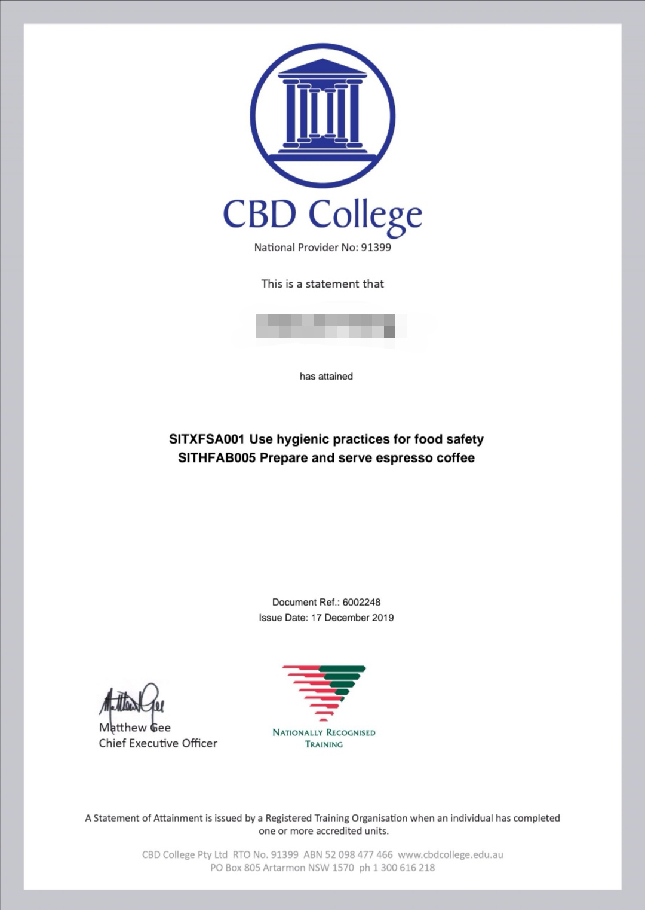
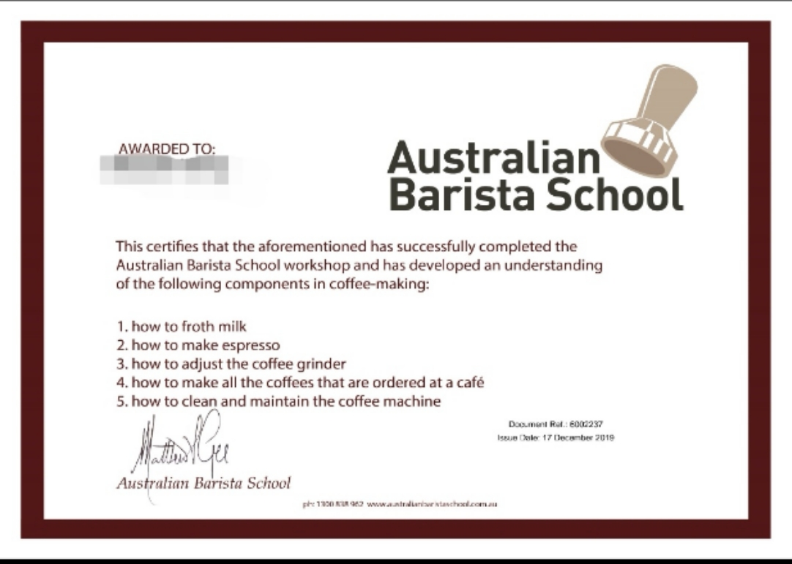

layout: post title: On Becoming A Barista date: 2019-12-18 18:27:07 +1100
Breaking news, I just got my barista certificate yesterday! It is very easy (but not cheap) to get such one though, I have been dreamming about this for a long time.
Yes, I am a coffee nerd. To start with, I fall in love with coffee about 6 or 7 years ago, I was in the last year of my high school and studied intensely everyday for the coming national collage entrance exam (If you know what that means in China, well...). It was quite stressful, to keep myself efficient and energetic for school, I drank a lot of coffee, I can still remember the brand of coffee that I drank the most is Nestle. Unfornately, I was drinking the most unhealthy and cheapest type of coffee back then, which means it usually contains artificial sweetener and various creamers. As a result, I gained weight, a lot. But still, I have become addicted to coffain since then, and probably not gonna quit it until I die.
Then I came to Australia, a place that people even look down Starbucks because they have their own good cafes almost every street. One of my favorite is cappuchino, I like it so much that I would have one almost everytime I hang out.
Anyway I finally decided to sign in the Barista course during my holiday in Sydney, one of reasons is that I'm boring like hell here too :p. To be honest, the course fee is sort of expensive for me, which is why I have been hesitated for a long time. The whole course duration is 5-hour, which can be completed in one day. After the course completed, we would be assessed by trainers with the relevant qualifications as set down by the Australian Government. The assessment is pretty easy though, it is done in two ways:
Overall, I was taught how to use a coffee machine from scratch with no prior experience, with these key skills listed below:
Here are some images I took from my courses, it was fun : )
Finally, just want to show my certificates. : )  